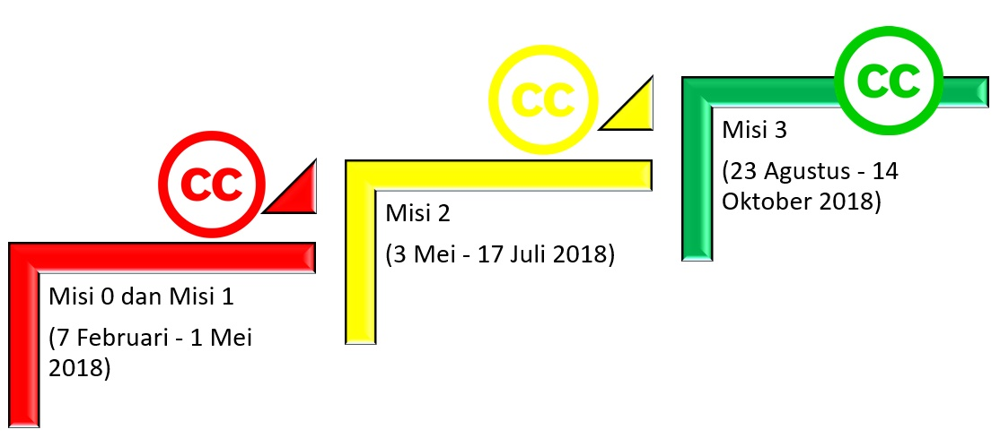

KETENTUAN PELAKSANAAN TRAINING OF TRAINERS CREATIVE COMMONS INDONESIA
Sertifikasi
Sertifikat resmi yang diterbitkan oleh Creative Commons International (CC Certificates) diberikan kepada 15 peserta terbaik dalam bentuk beasiswa dan dilaksanakan pada tahun 2019 oleh pelatih bersertifikat dari CCID. Program sertifikasi dari Creative Commons International kini sedang berjalan secara tertutup. Karena, modul dan segala kelengkapan proses sertifikasi masih dalam status beta dan masih akan dilkembangkan oleh Creative Commons Headquarter dan kami dengan target selesai pada akhir tahun 2018.
Peserta
Program pelatihan ini membuka kesempatan sebesar-besarnya pada peserta dari berbagai latar belakang dan disiplin ilmu atau keahlian yang memiliki minat pada bidang hak cipta dan lisensi terbuka, khususnya lisensi CC. Pakar-pakar lisensi CC dituntut untuk memahami penerapan lisensi pada obyek-obyek perlindungan hak cipta yang begitu beragam.
Oleh karena itu, pakar terkait lisensi CC tidak hanya melulu berkaitan dengan orang-orang dengan latar belakang ilmu hukum saja.
Pakar-pakar tersebut, paling tidak memiliki pengetahuan mendasar tentang hukum hak cipta dan lisensi CC, untuk kemudian bebas dikembangkan sesuai dengan latar belakang dan disiplin ilmu atau keahlian masing-masing pakar. Kriteria umum:
- Peserta merupakan Warga Negara Indonesia (WNI) dan berdomisili di Indonesia; Peserta berusia di atas 17 tahun per dimulainya waktu lomba;
- Peserta memiliki minat di bidang hukum hak cipta dan lisensi terbuka;
- Karyawan atau pegawai Creative Commons Indonesia dan Wikimedia Indonesia tidak diperbolehkan mengikuti program ini;
- Jika peserta mengalami hambatan atau memiliki pertanyaan dapat menghubungi panitia di ccidtot@wikimedia.or.id;
- Panitia berhak untuk mendiskualifikasi peserta jika melanggar/menggangu kelancaran/berjalannya kompetisi.

Penyaringan
Tahap penyaringan, seperti sudah dijelaskan sebelumnya, diperlukan untuk mendapatkan perwakilan terbaik yang nantinya akan menjadi pelatih dalam setiap lokakarya tatap muka di setiap daerah.
Tahap penyaringan terdiri dari 3 misi, yaitu:
Misi 0
- Peserta mendaftarkan diri dengan mengisi Formulir Pendaftaran;
- Peserta akan mendapatkan pemberitahuan terkait Misi 1 dari panitia maksimum 1x24 jam setelah mendaftar.
Misi 1
- Pemberitahuan terkait Misi 1 dari panitia berupa pranala (link) untuk mengakses aplikasi kuis daring Class Marker;
- Setiap peserta akan menerima soal yang berbeda;
- Kuis daring terdiri dari 25 soal;
- Kuis daring ini berdurasi 30 menit;
- Peserta akan langsung mengetahui pengumuman kelulusan setelah semua soal selesai dikerjakan;
- Peserta dapat mengulang sebanyak 1 kali apabila tidak lolos di kesempatan pertama;
- Ketentuan mengulang akan diberikan kepada peserta yang menerima pernyataan tidak lulus dari aplikasi Class Marker;
- Peserta dinyatakan lulus jika berhasil menjawab 75% soal dengan benar;
- Misi 1 berlangsung dari 7 Februari – 1 Mei 2018.
Misi 2 Peserta yang lulus dari Misi 1 akan mendapatkan pemberitahuan terkait Misi 2 dari panitia selambat-lambatnya 2x24 jam setelah tenggat Misi 1.
Misi 3 Peserta yang lulus dari Misi 1 akan mendapatkan pemberitahuan terkait Misi 2 dari panitia selambat-lambatnya 2x24 jam setelah tenggat Misi 2.
Keuntungan
- 15 paket beasiswa sertifikasi ahli lisensi Creative Commons dengan nilai total 30 juta rupiah;
- Menjadi salah satu kontak resmi untuk lokakarya lisensi Creative Commons di situs web Creative Commons International;
- Kesempatan berangkat ke Kanada dan mengikuti Creative Commons Global Summit 2019 untuk 3 orang selama 3 hari untuk peserta dengan nilai terbaik dari 15 peserta penerima beasiswa sertifikasi.
Tags:
Oleh:
5 Feb 2018Kategori:
Berita Terbaru
- Lokakarya Hak Cipta dan Lisensi Creative Commons di Pekanbaru
- Pengumuman Resmi: Hasil Akhir Training of Trainers Creative Commons Indonesia
- Literatur tentang Model Bisnis Terbuka "Made With CC"
- Data dan Artikel Ilmiah Terbuka dari PLOS!
- Konten Format Model 3 Dimensi Berilsensi CC di Platform Sketchfab